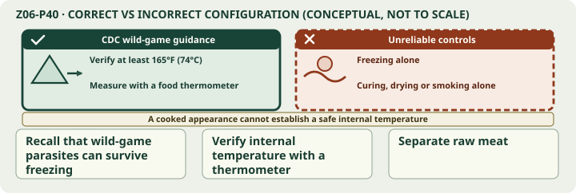

Z06-P40 · Hunting and fishing · New manuscript
Trichinellosis Prevention in Wild Bear and Omnivorous Game
Prevent severe parasitic trichinellosis by cooking wild bear and omnivore game meat to verified safe internal temperatures.
When it applies · Preparing legally harvested black bear, wild boar, or other omnivorous/carnivorous game.
Equipment · Calibrated digital meat thermometer, dedicated clean cutting board.

Actions
- Wild game can carry Trichinella that survive freezing. Processing methods such as curing, drying or smoking alone are unreliable.[H10]
- Use the CDC outbreak report’s public-health guidance for wild game in this context and verify at least 165°F (74°C) with a food thermometer. Color does not establish doneness.[H10]
- Keep raw meat and juices separate from other foods. Wash and sanitize food-contact equipment according to current food-safety guidance.[H10, F01]
Failure recognition · Relying on deep-freezing bear meat, making raw-cured jerky/sausage, or eating pink center cuts causes severe systemic trichinellosis.[H10]
Verify · Calibrated thermometer confirms safe internal cooking temperature throughout every cut and grinder/surfaces are sanitized.[H10, F02]
Stop or change course · Stop and seek medical care promptly if nausea, diarrhea, fever, facial swelling, or muscle pain follow eating wild game.[H10]
Evidence and editorial notes
- F01 · USDA / FDA / CDC · Four Steps to Food Safety (current web edition)
- Section: Clean and Separate · Conditions: Food preparation with safe water and surfaces
Support: Wash hands and separate raw animal foods and juices from ready-to-eat food.
Limitations: Requires safe water or approved hand hygiene substitutes in outages. · Conflicting evidence: None; retained for food safety pack completeness.
Editorial note: Maintains five-pack integrity. · Specialist reviewer: Food safety and public health
Primary source · checked 2026-11-24 - F02 · USDA / FDA / CDC · Four Steps to Food Safety (current web edition)
- Section: Cook > Minimum internal temperature · Conditions: Food preparation with a working food thermometer
Support: Use food-specific safe internal temperatures; visual appearance alone cannot verify cooking.
Limitations: Thermometer calibration and probe placement affect readings. · Conflicting evidence: None; retained for food safety pack completeness.
Editorial note: Maintains five-pack integrity. · Specialist reviewer: Food safety and public health
Primary source · checked 2026-11-24 - H10 · CDC · Outbreak of Human Trichinellosis — Arizona, Minnesota, and South Dakota, 2022 (2024)
- Section: Implications for Public Health Practice · Conditions: Wild game in the context of Trichinella prevention, especially bear and similar high-risk game
Support: CDC reports the public-health recommendation of at least 165°F (74°C), verified by a food thermometer. Freezing wild game is unreliable.
Limitations: No guarantee against pathogens or cross-contamination. Keep raw meat and juices separate from other foods. · Conflicting evidence: Conditions are recorded in the A03 audit.
Editorial note: Critical Z06 wild-game parasite safety rule. · Specialist reviewer: Food-safety microbiologist and veterinarian
Primary source · checked 2026-11-25
Source lineage · New manuscript (Z06 P17 food safety) · Classification · New manuscript.